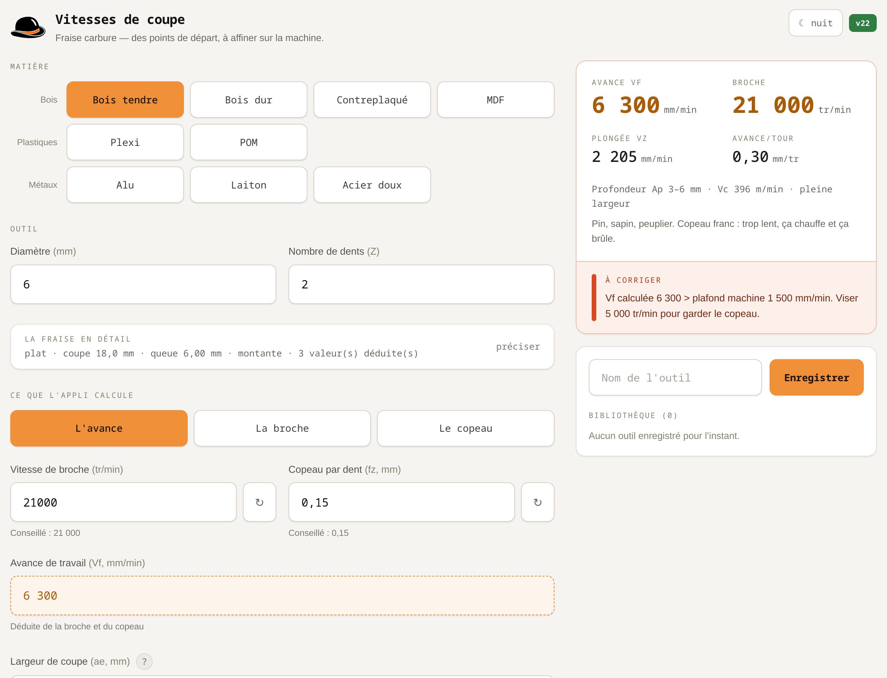

Cliquer n'importe où, ou Échap, pour fermer
Une appli web de poche pour choisir la broche et l'avance au pied de la fraiseuse : on tape un diamètre, on touche une matière, et les quatre nombres à reporter dans FreeCAD ou sur le pupitre sont là. Ouverte une fois, elle fonctionne ensuite sans réseau — l'atelier n'en a pas toujours.
Tout le calcul tient dans une grandeur : fz, l'épaisseur de matière que chaque dent enlève à chaque tour. C'est le copeau. Trop gros, la fraise force ; trop fin, elle ne coupe plus, elle frotte — et c'est le frottement qui chauffe, brûle le bois et use l'arête.
Le diamètre de la fraise, son nombre de dents, et la matière. L'appli propose une broche et un fz de départ ; les deux restent modifiables, avec un rappel de la valeur conseillée sous chaque champ.
L'avance Vf = broche × fz × dents en mm/min, la vitesse de plongée (un pourcentage de Vf, réglable), l'avance par tour, et la vitesse de coupe Vc = π × Ø × broche — la vitesse à laquelle l'arête balaye la matière, en m/min. Avec, pour chaque matière, une profondeur de passe conseillée.

Broche, copeau et avance sont liés par une seule égalité — Vf = broche × fz × dents. Il suffit donc d'en fixer deux pour obtenir la troisième, et il n'y a aucune raison d'imposer toujours le même sens. L'appli laisse choisir lequel des trois nombres elle déduit ; celui-là s'affiche en orange, on ne peut pas le saisir.
| On calcule | On saisit | La question posée |
|---|---|---|
| L'avance | broche + copeau | « Ma broche tourne à 24 000, à quelle vitesse avancer ? » — le cas classique. |
| La broche | avance + copeau | « Je veux avancer à 800 mm/min sans abîmer le copeau, à combien régler la broche ? » |
| Le copeau | avance + broche | « Voilà ce que j'utilise aujourd'hui — est-ce que ça vaut quelque chose ? » |
Celui-là ne sert pas à préparer un travail, mais à juger un réglage existant. On tape ce qu'on a dans le fichier ou sur le pupitre, et l'appli dit sous le champ ce que ça donne comme copeau, en pourcentage du conseillé : 21 000 tr/min à 800 mm/min avec une fraise de 6 mm à deux dents, c'est 13 % du copeau utile — la fraise frotte au lieu de couper, et c'est exactement ce qui brûle le bois. La même avance à 2 700 tr/min donne 99 %.
Basculer d'un sens à l'autre ne fait bouger aucun chiffre : le nombre qui devient saisissable reprend la valeur qu'il affichait comme résultat. On change de question, pas de réglage.
Des points de départ pour fraise carbure sur un portique amateur, cohérents avec les tables des fournisseurs d'outils pour cette classe de machine. Pour le bois, la broche reste au maximum et c'est le copeau qui pilote ; pour les métaux et les plastiques, c'est la vitesse de coupe Vc qui fixe la broche, diamètre par diamètre.
| Matière | Famille | Vitesse de coupe (m/min) | Copeau à Ø6 (mm/dent) | Profondeur de passe |
|---|---|---|---|---|
| Bois tendre | Bois | 4 | 0,15 | 3–6 mm |
| Bois dur | Bois | 35 | 0,108 | 2–4 mm |
| Contreplaqué | Bois | 38 | 0,12 | 2–5 mm |
| MDF | Bois | 42 | 0,132 | 3–8 mm |
| Plexi | Plastiques | 3 | 0,09 | 1–3 mm |
| POM | Plastiques | 35 | 0,108 | 2–5 mm |
| Alu | Métaux | 25 | 0,072 | 0,5–2 mm |
| Laiton | Métaux | 18 | 0,06 | 0,5–2 mm |
| Acier doux | Métaux | 9 | 0,042 | 0,2–0,8 mm |
Le tableau est donné pour une fraise de 6 mm ; dans l'appli, le copeau et la passe suivent le diamètre. Ce tableau est engendré depuis les valeurs de l'appli elle-même — rien n'est recopié à la main.
Une table ne sait rien de votre fraise, de votre broche ni de votre bois. Ces valeurs sont faites pour démarrer sans casser, puis s'affiner à l'oreille et au copeau : un copeau qui fume ou une fraise qui siffle en disent plus long que n'importe quel abaque.
Dans le bois, le calcul donne vite plusieurs milliers de mm/min. Si la machine ne les tient pas — la PrintNC de l'atelier décroche au-delà de 600 à 800 mm/min dans les courbes, son accélération est basse — le copeau réel s'amincit et la fraise se met à frotter précisément là où la trajectoire ralentit. Une case « avance max » optionnelle borne le calcul : quand Vf la dépasse, l'appli propose la broche plus lente qui garde le copeau sous le plafond.
Et quand même la broche minimale ne suffit plus, elle ne s'arrête pas là : ce n'est alors plus la vitesse qu'il faut baisser mais le nombre de dents. Elle calcule celui qui tient l'avance et le propose — c'est la raison d'être des fraises une dent en bois et en plastique sur les petites machines. Elles ne sont pas un pis-aller : elles sont l'outil des avances lentes.
Une fraise ne mord pas droit : elle entre et sort de la matière en arc. Quand elle n'engage qu'une bande étroite sur le côté — une reprise de contour, où l'on revient raser une surépaisseur laissée exprès — le copeau réel est bien plus fin que le fz calculé, et la fraise frotte là où l'on croyait couper. Raser 0,5 mm de large avec une fraise de 6 amincit le copeau d'un facteur 1,8 : il faut donc avancer 1,8 fois plus vite pour enlever la même épaisseur.
Attention à ne pas confondre : la passe radiale ae est une largeur, dans le plan ; la profondeur de passe Ap est ce que la fraise descend en Z. Seule la première amincit le copeau.
C'est le calcul que font les tables professionnelles et qu'ignorent les abaques amateur — d'où des finitions qui brûlent alors que les mêmes réglages passent très bien en pleine passe.
À l'inverse, l'acier et le laiton en petit diamètre demandent une broche lente — plus lente, parfois, que le minimum du variateur. L'appli ne fait pas semblant : quand la broche minimale force la vitesse de coupe bien au-delà de la cible, elle l'écrit, parce que c'est l'arête de la fraise qui paie la différence.
La même appli existe en deux exemplaires : celle-ci, qui s'ouvre dans un navigateur et s'installe sur un téléphone, et une appli de bureau en PySide6 pour le PC de l'atelier. Même mise en page, mêmes matières, mêmes avertissements.
Les formules ne sont écrites qu'une fois, dans un module qui ne connaît ni l'écran ni le navigateur — l'appli de bureau l'appelle directement, l'appli web en porte la traduction ligne pour ligne. Deux copies d'une même formule finissent toujours par diverger ; ici, ce qui pourrait diverger est testé.
Trente-huit contrôles vérifient le calcul, et leurs valeurs de référence sont tirées des captures de la maquette, pas du programme qu'elles jugent : un test qui reprend la formule qu'il vérifie ne vérifie rien. Deux d'entre eux ont d'ailleurs échoué au premier passage — et c'était l'attendu qui était faux, pas le calcul.
L'appli web ne demande rien : elle s'ouvre, et s'installe sur un téléphone si on veut. Ce qui suit concerne l'appli de bureau et son branchement dans FreeCAD — pour que les vitesses arrivent dans le Job sans être recopiées à la main.
Python 3 et PySide6, rien d'autre. Sur Arch ou dérivés :
sudo pacman -S pyside6
git clone https://github.com/atelierduverdier/vitesses-coupe.git
cd vitesses-coupe
python3 vitesses_coupe.py
Un fichier .desktop est fourni si vous voulez un lanceur
dans le menu. Le calcul se vérifie par python3 tests_noyau.py.
Copier la macro et son icône dans le dossier des macros — il est versionné, et plusieurs versions cohabitent souvent :
cp importer_outil_coupe.FCMacro icone_outil_coupe.svg \
~/.local/share/FreeCAD/v1-1/Macro/
En cas de doute sur le dossier, la réponse vient de FreeCAD lui-même,
dans sa console Python : FreeCAD.getUserMacroDir(True).
Dans FreeCAD : Outils → Personnaliser… → onglet Macros. Choisir
importer_outil_coupe.FCMacro, saisir un texte de menu
(« Importer un outil de coupe » — ce champ est obligatoire),
désigner l'icône, puis Ajouter. Passer ensuite à l'onglet
Barres d'outils, sélectionner l'atelier CAM en haut à
droite, créer une barre et y déplacer la commande avec la flèche →.
| Où | Quoi | Ce qui se passe |
|---|---|---|
| Appli | régler la fraise, ↑ Écrire dans FreeCAD… | la fraise entre dans la bibliothèque d'outils, ses vitesses sont retenues |
| FreeCAD | le bouton de l'atelier CAM | la fraise arrive dans le Job avec sa broche, son avance, sa plongée et les rapides |
Un fichier d'outil FreeCAD décrit la fraise — diamètre, dents,
longueurs — et ne peut pas porter de vitesses : celles-ci appartiennent
au Tool Controller du Job. Le format a bien un champ libre, mais FreeCAD
le vide dès qu'il réécrit l'outil. Les vitesses sont donc gardées
par l'appli, dans ~/.config/vitesses-coupe/, et rattachées à
la fraise par le nom de son fichier.
Conséquence le jour d'un changement de version majeure de FreeCAD : le
dossier de données est versionné et repart neuf, donc les fraises n'y
sont pas. Les vitesses, elles, restent. Rien n'est perdu, mais il faut
recopier les .fctb et les .fctl d'un dossier à
l'autre — la marche à suivre est dans le dépôt.
Ouvrir atelierduverdier.fr/coupe sur le téléphone, puis « Ajouter à l'écran d'accueil » dans le menu du navigateur. Elle s'y range avec sa propre icône, s'ouvre comme une appli, plein écran, et fonctionne sans réseau : une fois vue, elle reste en cache sur l'appareil.
Chaque réglage peut être enregistré sous le nom de l'outil — « Alu 6mm Z2 » — et rappelé d'un geste. Tout reste dans le navigateur du téléphone : rien n'est envoyé, il n'y a ni compte ni serveur. Le seul appel réseau est le compteur de fréquentation commun au site.
Une appli installée garde sa version en mémoire — c'est ce qui la rend utilisable sans réseau, mais elle pourrait ainsi rester en retard sans que personne ne s'en doute. D'où la petite pastille près du chapeau : verte, c'est bien la dernière ; rouge, une version plus récente est en ligne et il suffit de la toucher pour l'installer (au clavier, Ctrl + Maj + R fait la même chose). Hors-ligne, elle reste neutre : elle ne peut pas savoir, donc elle n'affirme rien.
Chaque outil enregistré se télécharge en .fctb — le format
des bibliothèques d'outils de l'atelier Path/CAM de FreeCAD — ou se copie au
presse-papier, ce qui rend service depuis un téléphone. Le fichier porte la
géométrie de la fraise ; les vitesses, elles, se recopient dans le Tool
Controller du Job (SpindleSpeed, HorizFeed,
VertFeed), d'où le second bouton qui les met en presse-papier.